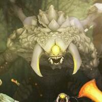
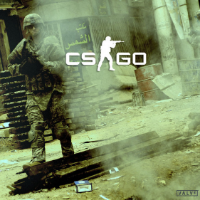
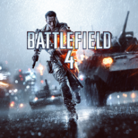
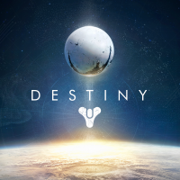
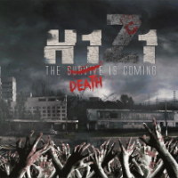
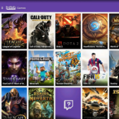
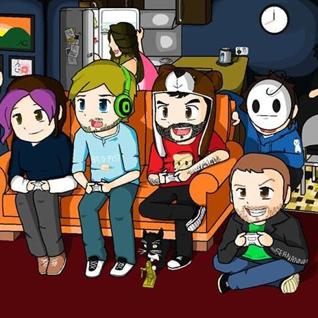

- 
-

- 
- 
- 
- 
- 
- 
Dota 2
Dota 2 is a free-to-play multiplayer online battle arena video game developed and published by Valve Corporation. The game was released for Microsoft Windows, OS X, and Linux in July 2013, concluding a Windows-only public beta testing phase that began in 2011. The game is the stand-alone sequel to Defense of the Ancients (DotA), a mod for Warcraft III: Reign of Chaos and its expansion pack, The Frozen Throne.
Development of Dota 2 began in 2009 when IceFrog, lead designer of the original DotA mod, was hired by Valve. Dota 2 was praised by critics for its gameplay, production quality, and faithfulness to its predecessor, despite being criticized for its steep learning curve. The game is the most actively played game on Steam, with peaks of up to 880,000 concurrent players as of September 2015.
To ensure that enough DotA players would take up Dota 2 and showcase the game's capabilities, Valve sponsored sixteen accomplished DotA teams to compete at The International, a Dota 2 specific tournament, for a one million dollar prize in 2011.[56] The International became an annual championship tournament, with the venue changing to Seattle, Washington, United States in 2012. Read More...
Hearthstone: Heroes of Warcraft
Hearthstone: Heroes of Warcraft is an online collectible card game developed by Blizzard Entertainment. It is free-to-play with optional purchases to acquire additional cards and access content quicker. The game was announced at the Penny Arcade Expo in March 2013 and released on March 11, 2014. Hearthstone is available on both Microsoft Windows and OS X systems, and is also available on iOS and Android touchscreen devices. New content for the game involves the addition of new card sets and gameplay, taking the form of either expansion packs or single-player adventures that reward the player with collectible cards upon completion.
From the beginning, the game was designed to be played solely online and to mimic the feel of physical cards; the game starts with the player opening a box, during gameplay the cards waver and move while in their hand, and cards when played slam down on the board. When attacking, cards leap across the board to strike the target; when a massive spike of damage is dealt, the board shakes; when a massive creature is summoned, an unseen audience gasps in awe. Hearthstone also offers interactive boards. The boards on which the cards are played can be interacted with in various ways, although the feature is purely for entertainment and has no effect upon gameplay. Read More...
Counter-Strike:GO
Counter-Strike: Global Offensive was released on August 21, 2012, and made available for Microsoft Windows and OS X on Steam, Xbox Live Arcade, and a US-only version on PlayStation Network.The Linux version was released in September 2014.It features classic content, such as revamped versions of classic maps, as well as brand new maps, characters and game modes. Cross-platform multiplayer was planned between Windows, OS X, Linux, and PSN players, but was ultimately limited to Windows, OS X, and Linux because of the differences in update-frequency between systems.The PSN version offers three input control methods, which include using either the DualShock 3 controller, PlayStation Move or USB keyboard/mouse.
Players purchase weapons and equipment at the beginning of every round with money awarded based on their performance. Completing objectives or killing enemies earns the player money while negative actions, like killing a teammate or hostage, takes money away from the player. In addition, when a round ends all players receive some amount of money, with players on the winning team receiving substantially more.
Global Offensive supports matchmaking and leaderboards for all online game modes, provided by Steam.The provided online service offers the ability to filter by game modes, maps and a built-in Steam friend system. Valve also employs Valve Anti-Cheat, which can automatically remove and ban players from the Valve online network. To match players of similar skill levels for an enjoyable experience, the game uses a heavily modified version of Elo rating system.The PC version of Global Offensive also supports private dedicated servers that the player may connect to through the community server menu in-game. These servers may be heavily modified and can be completely different from the base game. Read More...
Battlefield 4
Battlefield 4 (also known as BF4) is the twelfth installment in the Battlefield Series developed by DICE and published by EA. It is the sequel to Battlefield 3 and was released on the Xbox 360, Playstation 3, and PC on October 29, 2013. It is the first game in the franchise also released on eighth generation consoles, being released for the Playstation 4 on November 12, 2013 and the Xbox One on November 19 of the same year. Battlefield 4 is also available for unlimited play for EA Access members on the Xbox One as one of the service's launch titles.
Many elements from Battlefield 3 as well as other past installments return, such as the same four class system, a similar heads-up display, kill cams, as well as increased destruction. Players can now use dual-scoped weapons, including weapons with different firing modes (e.g. single shots, automatic fire).
Battlefield 4's multiplayer has one hundred and ten ranks, with each rank holding five sub ranks with roman numerals. There are forty-five ribbons which are unlocked by completing specific actions. Earning one Ribbons fifty times awards a medal with forty-five Medals in total in the base game. Service Stars are awarded after earning enough experience progression for that object. There are one hundred and thirty available service stars, each capable of being earned one hundred times. Read More...
Destiny
Destiny is a first-person shooter video game developed by Bungie and published by Activision. It was released on September 9, 2014, for the PlayStation 3, PlayStation 4, Xbox 360, and Xbox One consoles. Destiny marked Bungie's first new console franchise since the Halo series, and it is the first game in a ten-year agreement between Bungie and Activision. Set in a "mythic science fiction" world, the game features a massively-multiplayer "shared-world" environment with elements of role-playing games.
Players take on the role of a Guardian, defenders of Earth's last safe city, as they wield a power called Light to protect the city from different alien races. The Guardians are tasked with reviving a celestial being called the Traveler, while journeying to different planets to investigate and destroy the alien threats before humanity is completely wiped out. Since launch, Bungie has released three expansion packs furthering the story and adding new content: The Dark Below in December 2014, House of Wolves in May 2015, and The Taken King in September 2015, which marked the beginning of year two of Destiny and changed much of the core gameplay.
Alongside the new story content, other major changes were made to the core gameplay of Destiny as part of the version 2.0 patch released on September 8, 2015, coinciding with a week-long free preview of the PvP multiplayer modes. Read More...
H1Z1
H1Z1 is a survival sandbox massively multiplayer online game in development by Daybreak Game Company (formerly Sony Online Entertainment). H1Z1 is currently being developed for Microsoft Windows and eventually PlayStation 4.The game is set during a zombie apocalypse in the rural United States, in which players will have to survive against the natural elements, hordes of zombies, and thousands of potentially hostile survivors through interaction, scavenging for resources, building shelters, and crafting.
H1Z1 will include social features included in other SOE games, such as grouping, proximity voice chat, voice chat for gangs and more. It will also support Player Studio creations, allowing players to use player-created items in-game. SOE plans to develop H1Z1 from the ground up using input from players by employing a design process similar to PlanetSide 2's Roadmap System, where it communicates what features are in development and when players can expect them.
The gameplay of H1Z1 emphasizes on multiplayer cooperation, trading, and team-building.In an interview with Adam Clegg from Sony Online Entertainment, he made clear that unlike other zombie massively multiplayer online games, the main focus will be about surviving against the zombies through teamwork with other players, rather than having a player versus player (PvP) environment with zombies as a backdrop.The ability to craft items has been implemented. Read More...
Twitch
Twitch.tv is a live streaming video platform owned by Amazon.com.Introduced in June 2011 as a spin-off of the general-interest streaming platform Justin.tv, the site primarily focuses on video gaming, including playthroughs of video games, broadcasts of esports competitions, and other gaming-related events. Content on the site can either be viewed live, or viewed via Video on demand.
The popularity of Twitch would eclipse that of its general-interest counterpart; in October 2013, the website had 45 million unique viewers and by February 2014, it was considered the fourth largest source of peak Internet traffic in the United States. At the same time, Justin.tv's parent company was re-branded as Twitch Interactive to represent the shift in focus – Justin.tv was shut down in August 2014.The site has also branched out into music-related streams and content. In 2015, Twitch announced it had more than 1.5 million broadcasters and 100 million visitors per month.
Twitch is designed to be a platform for video game-related content, including e-sports tournaments, personal streams of individual players, and gaming-related talk shows.[47] A number of channels do live speedrunning.[48] The Twitch homepage currently displays games based on viewership. The typical viewer is predominately male and aged between 18 and 34 years of age, although the site has also made attempts at pursuing other demographics.
Competitive Gamers
E-Sports is a term for organized multiplayer video game competitions, particularly between professional players. The most common video game genres associated with electronic sports are real-time strategy, fighting, first-person shooter, and multiplayer online battle arena. Tournaments such as The International Dota 2 Championships, the League of Legends World Championship, the Battle.net World Championship Series, the Evolution Championship Series, the Intel Extreme Masters, provide both live broadcasts of the competition, and cash prizes to competitors.
In the second decade of the 21st century, eSports has grown tremendously, incurring a large increase in both viewership and prize money.Although large tournaments were founded before the 21st century, the number and scope of tournaments has increased significantly, going from about 10 tournaments in 2000 to about 260 in 2010.
The modern eSports boom has also seen a rise in video games companies embracing the eSports potential of their products. Below is a table of the top earningn competitive gamers period.Subsequently the first thirty highest paid competitive gamers all play Dota 2.
Highest Overall Earnings
| Player ID | Player Name | Total (Overall) | Game |
 ppd
ppd
|
Peter Dager | $1,984,925.69 | Dota 2 |
|
UNiVeRsE
|
Saahil Arora | $1,980,581.04 | Dota 2 |
 Aui_2000
Aui_2000
|
Kurtis "Aui_2000" Ling | $1,881,147.04 | Dota 2 |
|
Fear
|
Clinton "Fear" Loomis | $1,752,526.24 | Dota 2 |
| xiao8 | Zhang "xiao8" Ning | $1,662,202.73 | Dota 2 |
| ppd | Sumail "SumaiL" Hassan | $1,657,319.74 | Dota 2 |
| Hao | Chen "Hao" Zhihao | $1,562,946.23 | Dota 2 |
| Banana | Jiao "Banana" Wang | $1,211,250.16 | Dota 2 |
| SanSheng | Wang "SanSheng" Zhaohui | $1,205,274.32 | Dota 2 |
| Mu | Zhang "Mu" Pan | $1,193,811.11 | Dota 2 |
| Puppey | Clement "Puppey" Ivanov | $955,614.36 | Dota 2 |
| Sylar | Liu "Sylar" Jiajun | $915,770.11 | Dota 2 |
| MMY! | Lei "MMY!" Zengrong | $911,614.90 | Dota 2 |
| Super | Xie "Super" Junhao | $897,034.43 | Dota 2 |
| Fenrir | Lu "Fenrir" Chao | $827,257.88 | Dota 2 |
| fy | Xu "fy" Linsen | $827,257.88 | Dota 2 |
 iceiceice
iceiceice
|
Koh "iceiceice" Daryl Pei Xiang | $813,166.06 | Dota 2 |
| Yao | Yao "Yao" Zhengzheng | $741,610.71 | Dota 2 |
| s4 | Gustav "s4" Magnusson | $724,433.44 | Dota 2 |
| rOtK | Bai "rOtK" Fan | $673,653.79 | Dota 2 |
Youtube Gamers
Both private individuals and large production companies have used YouTube to grow audiences. Independent content creators have built grassroots followings numbering in the thousands at very little cost or effort, while mass retail and radio promotion proved problematic.Concurrently, old media celebrities moved into the website at the invitation of a YouTube management that witnessed early content creators accruing substantial followings, and perceived audience sizes potentially larger than that attainable by television.[189] While YouTube's revenue-sharing "Partner Program" made it possible to earn a substantial living as a video producer—its top five hundred partners each earning more than $100,000 annually—in 2012 CMU business editor characterized YouTube as "a free-to-use... promotional platform for the music labels". In 2013 Forbes' Katheryn Thayer asserted that digital-era artists' work must not only be of high quality, but must elicit reactions on the YouTube platform and social media. In 2013, videos of the 2.5% of artists categorized as "mega", "mainstream" and "mid-sized" received 90.3% of the relevant views on YouTube and Vevo. By early 2013 Billboard had announced that it was factoring YouTube streaming data into calculation of the Billboard Hot 100 and related genre charts.
he vast majority of videos on YouTube are free to view and supported by advertising. In May 2007, YouTube launched its Partner Program, a system based on AdSense which allows the uploader of the video to share the revenue produced by advertising on the site. YouTube typically takes 45 percent of the advertising revenue from videos in the Partner Program, with 55 percent going to the uploader. There are over a million members of the YouTube Partner Program. According to TubeMogul, in 2013 a pre-roll advertisement on YouTube (one that is shown before the video starts) cost advertisers on average $7.60 per 1000 views. Usually no more than half of eligible videos have a pre-roll advertisement, due to a lack of interested advertisers. Assuming pre-roll advertisements on half of videos, a YouTube partner would earn 0.5 X $7.60 X 55% = $2.09 per 1000 views in 2013.
In May 2013, YouTube introduced a trial scheme of 53 subscription channels with prices ranging from $0.99 to $6.99 a month.[222] The move was seen as an attempt to compete with other providers of online subscription services such as Netflix and Hulu
Nova Betrayed
Nova “Dark” Betrayed is a Battlefield 4 player who specializes in “Quick Scooping”. He started his YouTube channel in 2012 when the quick scoping snipers had already become popular on YouTube. With stylized filters jump cuts and almost unbelievable k/d (kill to death) ratios Dark – Betrayed quickly and is widely considered one of the most talented battlefield 4 players today. After leaving for a short period and coming back in 2014 with the release of the Battlefield 4 game his channel consist of mostly Battlefield 4 and Counter-Strike: GO gameplay.
Battlefield has a huge multiplayer following but has yet to really establish a competitive gaming online presence. This may be due to the major amount of time and effort spent fixing some of the games bugs and glitches with its multiplayer. Battlefield has always been a franchise that prides itself on its massive maps and beautiful environment. Hopefully with the advent of next-gen consoles and greater more powerful hardware for the PC games like these with this much detail and fidelity will be more successful in the future. -Cedrick Baker 2015
Xfactor Gaming
Below is a small snippet about xfactor from xfactor himself:
The Battlefield franchise has always been a part of who I am as a gamer. I used to be a competitive gamer in BFBC:2 and Battlefield 3 who was fortunate enough to win several big titles and leagues. Expanding upon my personal success I decided to start mentoring and sharing tips and tricks for Battlefield 3 straight from the competitive scene. Not long into my quest on YouTube I met up with some kick ass people such as Levelcap, Jackrags, and Matimi0 and continue with many epic Battlefield 4 gameplays, tips, tricks and guides!